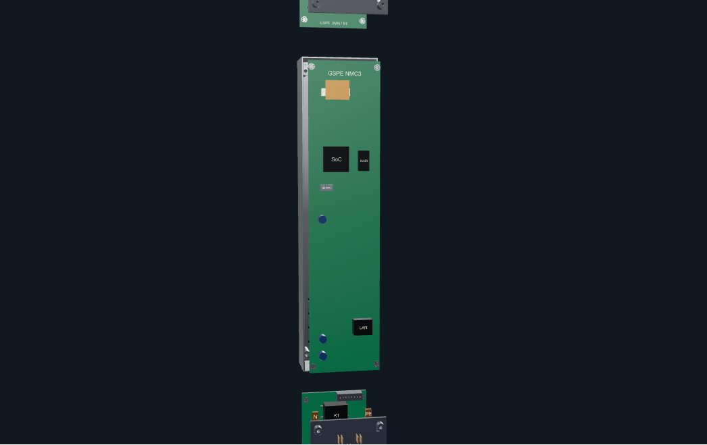

GSPE engineering showcase
APDU9953 · component detail
GSPE
Component detail
Product
Components
Product overview
/
Components
/ Busbars & PCB
Component 07
Internal busbars & PCB
GSPE APDU9953 · electrical stack

Load interactive 3D model · 2 MB
Service layers
Busbars, relay boards and NMC3 electronics.
Assembled
Exploded
Reset view
Component details
Specification
Layer
Internal busbars & PCB
← Previous component
Next component →